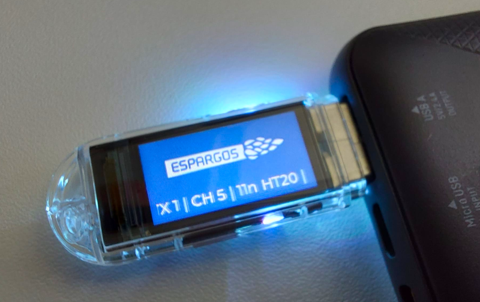

T-Dongle-C5 firmware installer
Turn your LILYGO T-Dongle-C5 into a portable Wi-Fi test transmitter for ESPARGOS.
Download user manual (PDF)
1. Plug in your dongle
- Open this page in a desktop browser that supports WebSerial.
- Hold the dongle’s button while plugging it into USB to enter BOOT mode, then release it.
- Close any serial monitors, connect below, and select the dongle’s USB serial port.
Use a data-capable USB connection. This firmware is for the LILYGO T-Dongle-C5 with 16 MB flash.
Not connected
2. Install firmware
Loading firmware…
Installing replaces the firmware and partition table. Saved transmitter settings are preserved.
Loading installer…
3. Start transmitting
Unplug and reconnect the dongle without holding the button. You can also plug it into a power bank.
Short-press the button to open the setup menu and move between settings. Long-press to edit, short-press to change a value, then long-press to save.